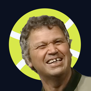

Tennis Freak
What’s new
Tap any match to open it.
Head-to-head
Every previous meeting between the two players, with the score
Player cards
World ranking, season record, titles, prize money and profile
Rankings
Tap a player for their profile and last matches
Live matches
Keep updating while the view is open